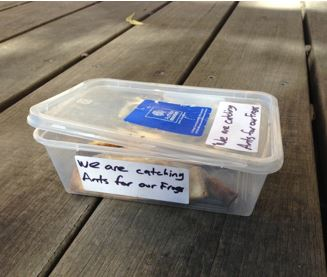
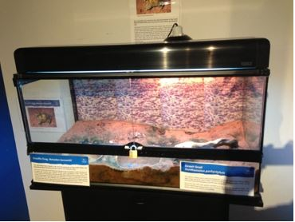
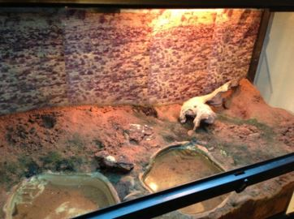

Preface
I wrote the following paper back in 2013 when working at the Australian Museum, Sydney. I had originally intended to present at a future conference which never eventuated. I am no longer working at the Australian Museum and the exhibit no longer exists. This has been published online in order to help anyone working with the species or who has any interest.
Abstract
The Crucifix Frog is a strikingly colourful frog, endemic to inland New South Wales and southern Queensland. Their round body, large eyes and quick, jerky movements also make them charismatic and cute. Despite this, very few Australians are aware of its existence fewer still have ever seen them alive. This paper summarises the challenges, solutions and observations involved in maintaining the species in captivity.
Introduction
Described by Gunther in 1873, this odd-looking frog is easily identified by its yellow skin covered with a pattern of dark spots resembling a cross. Other common names include; the Holy Cross Frog, Holy Cross Toad, Catholic Frog and Catholic Toad. Like the other four species of Notaden is sometimes referred to as a toad, even though it is a true frog, not a toad. In late 2010, amphibian researcher, Marion Anstis offered the Museum surplus specimens from a research project investigating the phases of this species metamorphosis. The frogs were collected on scientific license as egg spawn from a temporary pool in the Macquarie Marshes region of New South Wales. In December 2010 our specimens arrived as metamorphs and were approximately 13-15mm from snout to vent. As a known ant feeder the main challenge involved in keeping this species is finding a reliable supply of ants. Lessons learned from other institutions maintaining one of Australia’s best known ant specialist; the Thorny Devil, Moloch horridus, were used to maintain the frogs.
Natural History of Notaden bennettii
The Crucifix Frog inhabits the mainly black-soil flood plains as well as savannah and mallee woodland habitats of inland New South Wales and southern Queensland (Cogger 2001:92). This species grows to an average total length of 55mm (Cogger 2001:92). This species requires moist soil to burrow (Heatwole et al. 1971:375) with the adults spending the majority of their life hidden beneath the soil (Tyler 1992:71). Notaden bennettii burrows the same as other members of the genera; in a circular method straight downwards (Tyler 1989:94-5). To survive long periods of dryness they can hibernate in a state of suspended animation until the rains return (Robinson 2002:51). Males make an owl like “whoooo” breeding call rising slightly in inflection after heavy rainfall (Robinson 2002:51). Breeding has been observed between January and February in the Chinchilla area after heavy rainfall with males calling and pairs amplexing in shallow temporary pools (Sharman et al. 1995:667). Egg masses are free floating, approximately 100x60mm in size and contain around 500 eggs (Sharman et al. 1995:667). Egg masses are formed by the female while in amplexus creating numerous bubbles with her forelimbs which mix with the eggs as the male fertilises them (Anstis 2013:481). The tadpoles develop in temporary pools, are plump in shape and measure up to 40mm in total length (Anstis 2002:231). Metamorphosis takes approximately six weeks, at which stage they have adult colouration and measure approximately 11-13mm long (Anstis 2002:232).

Image 1. Young Crucifix Frogs with $2 coin for scale. Photo: Chris Hosking
Diet
The adult diet is believed to consist mainly of ants and termites (Robinson 2002:51 and Tyler 1992), however stomach contents examined by Calaby (1960:80) indicates that larger prey are also taken including lepidoptera larvae and small beetles. The greatest challenge in keeping this species is that a large proportion of the species’ wild diet is black ants (Iridomyrmex spp). This was a concern before the animals were acquired and a dependable supply of ants had to be found. Furthermore, a solution was required for feeding during times when ants are unavailable. A starting point was to find parallels with another Australian Ant-eater; the Thorny Devil, Moloch horridus.
The Thorny Devil has successfully been kept outside of their natural range by Melbourne Museum by collecting and maintaining numerous large cultures of ants (Henderson 2008). Since we did not have the resources at the time to culture our own ants, two ideas were proposed. The first method was to take the frogs outside somewhere on Museum grounds where an ant trail could be found so that they could feed for several minutes a day before being returned to their exhibit. This is a technique which had been used by some institutions keeping Thorny Devils (Boylan 1993, Van derReijden 2005). This was found to be impractical due to the burrowing habits of this species, with not every frog able to caught and taken outside without being dug up. This was also highly dependent on warm humid weather outside and not exposing the animals to predators, disease or desiccation. Soon after the frogs were acquired, it was discovered that the frogs would surface once ants were introduced the exhibit; implying that the frogs could detect the ants by smell, hearing or some other sense such as vibration. This meant that if we could bring ants to the frogs then we would not have to dig them up. The second method was to trap ants using baited containers which could then be fed out to the frogs while on exhibit. This method has been the most effective for feeding Thorny Devils (Boylan 1993 & Van derReijden 2005) as it allows the public to see the frogs as they feed. This method would also prove to be the most time effective way to supply ants at the Museum.
The art of ant catching
The ant trap consists of a plastic take-away food container containing bait and left in the Museum garden with a quarter of the lid open so that ants can enter. Stickers and notes were soon seen as necessary to make it look more official and less like someone’s disposed lunch in order to stop cleaners, gardeners and the general public from throwing it away. Image 2. Trap used to collect ants. Photo: Chris Hosking
Bait originally trialled to attract ants included; honey, fruit and chocolate with little to moderate success. After further trials it was discovered that left-over cooked meat bones, particularly chicken and pork ribs, worked best. On most days when the weather is ant-friendly (good sun, 18OC + and no sign of rain) 2-3 ant traps are placed outside in strategic locations within the Museums garden area where ants are known to occur. After 3-4 hours the traps can be snapped shut and brought back inside, fed to the frogs and be returned to the outside to be used again. Ants tend to stop foraging, it seems, at dusk so traps need to be retrieved before dark or else they will return to the nest and leave an empty trap. After about four uses the traps become greasy and have the pheromones of distressed ants and sometimes a few dead ants so they should be cleaned or changed as often as possible. Likewise the bones do lose their attractiveness to ants over time and need replacing.
Captive Diet
These frogs have been raised in captivity on black ants and termites (Cogger, H. 2013. pers. comm., 20 August and Anstis, M. 2013. pers. comm., 27 August). In the wild tadpoles feed on algae and metamorphs on ants (Anstis, M. 2013. pers. comm., 27 August). The frogs at the Australian Museum are fed once or twice a day. Ants are feed out whenever they can be caught. The trap is placed inside the enclosure, opened and its contents gently tipped onto the substrate (away from any surfaced frogs). Any remaining ants are shaken from the container, lid and bones. The bait and the container can then be removed from the exhibit. The ants collected were mainly Iridomyrmex and Crematogaster spp. During cooler periods or times of rainfall ants are unavailable, the frogs can become less active during these times however they will eat other food if offered. The main alternative to ants was baby crickets which are eaten readily as they are the same size as ants. At other times when both ants and baby crickets could not be sourced, small crickets with an approximate length of 3mm could also be used. Crickets would be taken whenever offered, however ants were always the primary food source as it is believed that the frogs require suitable formic acid from ants in order to maintain health. The diet is supplemented every two weeks with 50/50 mix of calcium and vitamin powder is applied to the baby crickets in a plastic bag before being fed out. This is a precautionary measure against calcium deficiency. The project suffered its first setback when one of the frogs was found dead inside an ant trap which had been left inside the enclosure. The frog had squeezed through a small hole at the bottom of the trap and could not get out. Burrowing frogs are highly vulnerable to drying out if they cannot burrow down (Tyler 1989:93-94). It was assumed at the time that the Frogs needed to feed from a steady ant trail like the Thorny Devil does, so a small (3-6mm) was made in the bottom of the trap (a plastic take-away container) and covered with sticky tape while catching ants. The trap would then be placed in the enclosure and the tape removed in order to allow the ants to gradually trial out and be fed on by the frogs. This death made us re-assess our assumptions; did we need the ants to form a trail? We decided that it was not crucial and it was simpler to empty out the ants and eliminate the risk of another frog becoming trapped.
Another issue caused by the feeding method is the accidental introduction of small meat and bone fragments when emptying out the traps into the exhibit. This could promote bacterial and fungal growth so regular spot cleaning is necessary. The tadpoles in captivity have been by raised in shallow plastic basins, with 15cm deep water as well as silt from the original site of collection and fed on small amounts of crushed algae discs (Anstis 2013. pers. comm., 27 August). Unlike the Thorny Devil; Crucifix Frogs do not appear to need to feed from an ant trail and will happily feed on one after another, turning and even hopping after each ant.
Housing
When the animals first arrived they were very small and their exhibit was not yet ready so a small terrarium was used to house them. The terrarium was 36cm long, 18cm deep and 15cm high with 10cm deep of sand/clay mix for substrate. A shallow water bowl was provided at one end and a small shelter at the other. The enclosure was kept at room temperature without any supplementary heating. The substrate was sprayed once a day. This setup is the same as the short to medium term off-exhibit housing that we use in the event that an animal needs to be removed from display. After a month, the first exhibit was completed, this was an aquarium formerly used to display Green Tree Frogs, Litoria caerulea, (and previous to that it was a tropical aquarium for former director; Dr Michael Archer) 90cm long 35cm deep and 45cm high with 10cm deep of sand/clay mix for substrate. Two 75cm Exo-Terra ReptiGlo 5.0 fluorescent tubes were used for lighting and a single 2cm deep water dish was added. A single piece of driftwood provided shelter and a 75watt Swamp Basking Spotlight mounted at one end provided a warmer side. The water dish was topped up daily to account for evaporation from the spotlamp. Because the species requires moist soil to burrow (Heatwole et al. 1971:375) the substrate was sprayed twice a day.
Unfortunately, as satisfactory as the first exhibit was, a leak was detected a year later in the bottom of the aquarium which caused the timber base to begin to rot. A second exhibit was created this time from an Exo-Terra brand terrarium 90cm long, 45cm wide and 45cm high with an average 10cm deep of sand/clay mix for substrate. Some new substrate was added with most of it heat treated in a microwave to kill any micro-organisms. Once again a 75watt Swamp Basking Spotlight was mounted at one end to provide a thermo-gradient. The temperature at the cool end is 22.4OC (the same as the ambient room temperature) and at the warm end is 25.2OC. It has been noted that most of the burrows used by the frogs are at the warm end. A second 2cm deep water dish was also added.
Image 3. Crucifix Frog exhibit. Photo: Chris Hosking.
In early 2013 deeper water bowls were added after two of the frogs were heard calling from underground. These deeper pools would hopefully assist any future calling and spawning activity. All of the enclosures mentioned above were ant-proofed by applying a 2cm wide “moat” of petroleum jelly around any vents, tops or openings. In mid-2013 we experimented with creating a multi-species display by adding Desert Snails, Xanthomelon pachystylum, which feed on algae as well as other vegetation, and burrow to escape the dry season much the same as the Crucifix Frog.
 Image 4. Exhibit detail. Photo: Chris Hosking
Husbandry
The exhibit is mist sprayed daily and both water bowls are topped up. Traps are kept in the freezer to keep the bones fresh when not in use; they are then taken outside and placed in a known foraging area for ants. 2-3hours later they are retrieved and fed out to the ants. The number of frogs feeding is recorded. Record keeping is an important part of animal husbandry so all watering, feeding and observations are recorded. Due to the sporadic nature of animals surfacing, staff record how many frogs they have seen active at a particular time, feeding or otherwise. Meat and bone scraps from the ant traps and any faeces are removed daily. This is especially true for snail faeces and left-over food, which can promote mould so needs to be removed as soon as possible. Glass is cleaned using water and paper towel once a week, unless it gets particularly dirty from the activities of the snails. The petroleum jelly is re-applied once a month to prevent ants from escaping. Apart from providing a consistent supply of ants and small invertebrates the main challenge for keeping this species is its cryptic nature; as it is possible to go for weeks without sighting any of the frogs. The ability to quickly sight each animal every day to make sure it is alive and feeding is impossible. Another challenge is being able to identify individuals; although they have very colourful markings it is hard to find differences between them, even when photographed. This prevented us collecting any growth data as it would be impossible to be sure that we were weighing the same animals each time, unless they were separated into different enclosures with their own identification code, which we were not willing to do. Since they were also too small to identify using PIT tags, the solution has been to photograph and draw the dorsal surface of each frog and record the unique pattern of warts.
An interesting observation
It was first noticed by museum naturalist; Martyn Robinson, and has since been observed many times, that when in the proximity of prey, the Crucifix Frogs exhibit a form of ‘pedal luring’. Utilising toes and feet to lure prey has been recorded in amphibians such as salamanders (Bavetz 1994), the terrestrial Leptodactylid frog; Ceratophrys calcarata (Murphy 1976 & Radcliffe et al. 1986), the tree frog Phyllomedusa burmeisteri (Bertoluci 2002) and may occur in Dendrobatids (Murphy 1976:339). Prey luring behaviour has been recorded in various Squamate groups such as vipers, pythons, elapids, skinks as well as some Chelonids (Vitt et al. 2008, Bertoluci 2002:93). Crucifix Frogs will use pedal luring by wiggling the tips of the fourth and fifth toes while sitting still. Usually, both back feet are wiggled simultaneously (Robinson & Hosking. 2014:306). The toe-wiggling was first seen when the frogs were given ants, increasingly, as they got older it is now mainly seen with cricket prey. This behaviour has been recorded and can be viewed at this link
Conclusions
Keeping and displaying the Crucifix Frog at the Australian Museum has been a rewarding and interesting project. Although a high proportion of the diet includes ants, it was soon discovered that the frogs will feed on any live insect as long as it fits within a small size range. Feeding is much more regular than other frogs (once to twice a day) and they can be easily feed on commercially available crickets. Furthermore, unlike the Thorny Devil; which feed from a continuous ant trail, Crucifix Frogs will happily pursue ants as they are scattered around the enclosure. Apart for the regular feeding and acquiring ants the housing and husbandry of this frog is relatively simple. The keeping of this species in captivity has allowed us to observe suspected pedal luring; behaviour previously unrecorded in an Australian frog. We hope to be able to successfully breed the species in the near future.
Acknowledgements
This project would not be possible without the enthusiasm, patience and guidance of my colleague Martyn Robinson. I thank Dr Marion Anstis for supplying the frogs and providing personal observations about this species. Dr Hal Cogger very generously provided his personal account in keeping this species as well as direction for references. I also thank Dr Peter Harlow from Taronga Zoo and Chris Banks from Melbourne Zoo regarding the history of this species in captivity. I am also thankful to Dr Jodi Rowley for providing insights about Pedal Luring including references and to Jenifer Cork for editing and uploading the video. Ross Sadlier provided access to the Museum’s Herpetological Library. Steve Vogel and Rebekah Hosking both helped enormously by reviewing the paper.
References
Anstis, M. 2002. Tadpoles of South-eastern Australia. Reed New Holland. Sydney.
Anstis, M. 2013. Tadpoles and Frogs of Australia. Reed New Holland. Sydney.
Bavetz, M. 1994. Pedal Movements in Two Ambystomatid Salamanders. Journal of Herpetology Vol 28(4):504-506.
Bertoluci, J. 2002. Pedal luring in the leaf-frog Phyllomedusa burmeisteri (Anura, Hylidae, Phyllomedusinae). Phyllomedusa Vol 1(2)93-95.
Boylan, T. A note on the growth rates and diet of hatchling Moloch horridus. Herpetofauna Vol 23(2):32-4.
Cogger, H.G 2001. Reptiles and Frogs of Australia. Reed New Holland. Sydney.
Calaby, J.H 1960. A note on the food of Australian desert frogs. West. Aust. Nat. Vol 7(3):79-80.
Heatwole, H., Cameron, E. & Webb, G. 1971. Studies on the anuran water balance-II. Desiccation in the Australian Frog, Notaden bennettii. Herpetologica Vol 27(4):365-378.
Henderson, A. 2008 Thirty-three Ants per Minute – The maintenance of Thorny Devils Moloch horridus and supporting captive ant colony. 2008 ARAZPA Conference.
Murphy, J. 1976. Pedal Luring in the Leptodactylid Frog, Ceratophrys calcarata Boulenger. Herpetologica Vol 32(3):339-341.
Radcliffe, C., Chiszar, D., Estep, K., Murphy, J. & Smith, H. 1986. Observations in Pedal Luring and Pedal Movements in Leptodactylid Frogs. Journal of Herpetology Vol 20(3):300-306.
Robinson, M. 2002. A field guide to frogs of Australia. Reed New Holland. Sydney.
Robinson, M. & Hosking, C. 2014. Notaden bennettii (crucifix frog) pedal luring. Herpetological Review. 45(2): 306.
Sharman, M., Wlilliamson, I. and Ramsey, D. 1995. Observations on the early life history stages of Notaden bennettii in the Chinchilla area of southern Queensland. Memoirs of the Queensland Museum Vol 38(2): 667-669.
Tyler, M.J. 1989. Australian Frogs. Viking O’Neil. South Yarra.
Tyler, M.J. 1992. Encyclopaedia of Australian Animals: Frogs. Angus & Robertson. Pymble.
Van derReijden, J. 2005. The Captive Husbandry and Breeding of the Thorny Devil. Moloch horridus. Reptiles Australia. Vol 2(5):6-1
Vitt, L.J. Zug, G.R. & Caldwell, J.P. 2001. Herpetology: An Introductory Biology of Amphibians and Reptiles. Academic Press. Amsterdam.